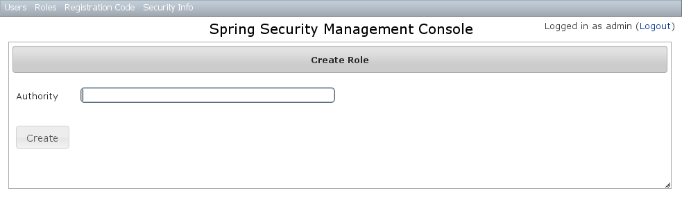
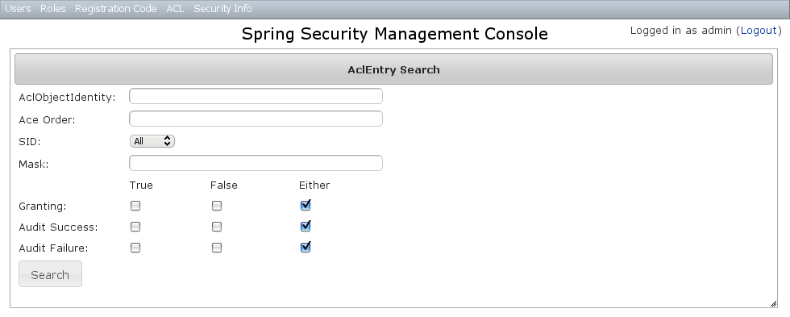

Spring Security UI Plugin - Reference Documentation
Authors: Burt Beckwith
Version: 0.2
Table of Contents
1 Introduction to the Spring Security UI Plugin
The Spring Security UI plugin provides CRUD screens and other user management workflows. Non-default functionality is available only if the feature is available; this includes the ACL controllers and views which are enabled if the ACL plugin is installed, Requestmaps support which is available ifgrails.plugins.springsecurity.securityConfigType is set to "Requestmap" or SecurityConfigType.Requestmap in Config.groovy, and persistent cookies support which is enabled if it has been configured with the s2-create-persistent-token script.As of version 0.2 the plugin does not declare any dependencies on plugins, although it has several:This is to support both 1.3.x and 2.0 applications without specifying a fixed version. Be sure that you have these dependent plugins installed before installing this one (using the latest versions of each is your best bet).
Name Minimum Version spring-security-core 1.2 1.0 jquery 1.4.4 jquery-ui 1.8.7 famfamfam 1.0
Release History
- February 12, 2012
- 0.2 release
- JIRA Issues
- September 14, 2010
- 0.1.2 release
- JIRA Issues
- July 27, 2010
- 0.1.1 release
- July 26, 2010
- initial 0.1 release
2 User Management
User search
The default action for the User controller is search. By default only the standard fields (username, enabled, accountExpired, accountLocked, and passwordExpired) are available but this is customizable with the grails s2ui-override script - see the section on configuration.You can search by any combination of fields, and the username field has an Ajax autocomplete to assist in finding users. In this screenshot you can see that an email field has been added to the domain class and UI. Leave all fields empty and all checkboxes set at Either to return all users. This example shows a search for usernames containing 'adm' (the search is case-insensitive and the search string can appear anywhere in the username). Results are shown paginated in groups of 10. All of the column headers are clickable and will sort the results by that field:
This example shows a search for usernames containing 'adm' (the search is case-insensitive and the search string can appear anywhere in the username). Results are shown paginated in groups of 10. All of the column headers are clickable and will sort the results by that field:
User edit
After clicking through to the 'admin' user you get to the edit page (there are no view pages): You can update any of the attributes or delete the user. You can see that there's a "Login as user" button here - that us only shown if you're authenticated with a user who is granted
You can update any of the attributes or delete the user. You can see that there's a "Login as user" button here - that us only shown if you're authenticated with a user who is granted ROLE_SWITCH_USER: This allows you to temporarily assume the identity of another user (see Section 15 in the Spring Security Core plugin documentation for more information about switch-user). The "Logged in as ..." information in the top right of the screen will change to show that you're running as another user and provide a link to switch back. The role name is arbitrary and can be changed by overriding
This allows you to temporarily assume the identity of another user (see Section 15 in the Spring Security Core plugin documentation for more information about switch-user). The "Logged in as ..." information in the top right of the screen will change to show that you're running as another user and provide a link to switch back. The role name is arbitrary and can be changed by overriding edit.gsp.OpenIDs
If the OpenID plugin is installed, you can manage users' associated OpenIDs:
User creation
You can create new users by going to/user/create or by clicking the Create action in the Users menu.
3 Role Management
Role search
The default action for the Role controller is search. By default only theauthority field is available but this is customizable with the grails s2ui-override script - see the section on configuration.The authority field has an Ajax autocomplete to assist in finding roles. Leave all fields empty to return all roles. Authority search is case-insensitive and the search string can appear anywhere in the name (and you can omit the
Authority search is case-insensitive and the search string can appear anywhere in the name (and you can omit the ROLE_ prefix). Multiple results are shown paginated in groups of 10 but if there's only one result you'll be forwarded to the edit page for that role.Role edit
After clicking through to a role you get to the edit page (there are no view pages): You can update any of the attributes or delete the role. Any user that had been granted the role will lose the grant but otherwise be unaffected.If you click the Users tab you can see which users have a grant for this role and can click through to their edit page:
You can update any of the attributes or delete the role. Any user that had been granted the role will lose the grant but otherwise be unaffected.If you click the Users tab you can see which users have a grant for this role and can click through to their edit page:
Role creation
You can create new roles by going to/role/create or by clicking the Create action in the Roles menu.
4 Requestmap Management
The default approach to securing URLs is with annotations, so the Requestmaps menu is only shown ifgrails.plugins.springsecurity.securityConfigType has the value "Requestmap" or SecurityConfigType.Requestmap in Config.groovy.Requestmap search
The default action for the Requestmap controller is search. You can search by URL or Config Attribute. Leave all fields empty to return all Requestmaps. Searching is case-insensitive and the search string can appear anywhere in the field. Multiple results are shown paginated in groups of 10 and you can click on either header to sort by that field:
Searching is case-insensitive and the search string can appear anywhere in the field. Multiple results are shown paginated in groups of 10 and you can click on either header to sort by that field:
Requestmap edit
After clicking through to a Requestmap you get to the edit page (there are no view pages): You can update any of the attributes or delete the Requestmap. Editing or deleting a Requestmap resets the cache of loaded instances, so your changes will take effect immediately.
You can update any of the attributes or delete the Requestmap. Editing or deleting a Requestmap resets the cache of loaded instances, so your changes will take effect immediately.Requestmap creation
You can create new Requestmaps by going to/requestmap/create or by clicking the Create action in the Requestmaps menu. Creating a Requestmap resets the cache of loaded instances, so your changes will take effect immediately.
Creating a Requestmap resets the cache of loaded instances, so your changes will take effect immediately.
5 User Registration
Most of the plugin's controllers are intended to be part of a backend admin application, but the Registration and Forgot Password workflows are expected to be user-facing. So they're not available in the admin menu like the User, Role, and other backend functionality - you'll need to expose them to your users.One way to do this is to replace the defaultlogin.gsp that's provided by the Spring Security Core plugin with this plugin's version. You can do this by running grails s2ui-override auth - see the section on configuration for more details. If you do this your users will have links to both workflows from the login screen:
Registration
Navigate to/register/: After filling out valid values an email will be sent and you'll see a success screen:
After filling out valid values an email will be sent and you'll see a success screen: Click on the link in the email:
Click on the link in the email: and you'll finalize the process, which involves enabling the locked user and pre-authenticating, then redirecting to the configured destination:
and you'll finalize the process, which involves enabling the locked user and pre-authenticating, then redirecting to the configured destination:
Configuration
The post-registration destination url is configurable ingrails-app/conf/Config.groovy using the postRegisterUrl attribute:grails.plugins.springsecurity.ui.register.postRegisterUrl = '/welcome'
defaultTargetUrl value will be used, which is '/' by default.You can customize the subject, body, and from address of the registration email by overriding the default values in grails-app/conf/Config.groovy, for example:grails.plugins.springsecurity.ui.register.emailBody = '...' grails.plugins.springsecurity.ui.register.emailFrom = '...' grails.plugins.springsecurity.ui.register.emailSubject = '...'
emailBody property should be a GString and will have the User domain class instance in scope in the user variable, and the generated url to click to finalize the signup in the url variable.In addition, each new user will be granted ROLE_USER after finalizing the registration. If you want to change the default role, add more, or grant no roles at all (for example if you want an admin to approve new users and explicitly enable new users) then you can customize that with the defaultRoleNames attribute (which is a List of Strings):grails.plugins.springsecurity.ui.register.defaultRoleNames = [] // no roles
grails.plugins.springsecurity.ui.register.defaultRoleNames = ['ROLE_CUSTOMER']
Mail configuration
The plugin uses the Mail plugin to send registration emails, so you'll need to configure an SMTP server. See the plugin's documentation for the syntax.Notes
You should consider the registration code as starter code - every signup workflow will be different, and this should help you get going but is unlikely to be sufficient. You may wish to collect more information than just username and email - first and last name for example. Rungrails s2ui-override register to copy the registration controller and GSPs into your application to be customized.If there are unexpected validation errors during registration (which can happen when there is a disconnect between the domain classes and the code in RegisterController they will be logged at the warn level, so enable logging to ensure that you see the messages, e.g.log4j = {
error 'org.codehaus.groovy.grails',
'org.springframework',
'org.hibernate',
'net.sf.ehcache.hibernate'
// pre-2.0
// warn 'grails.app.service.grails.plugins.springsecurity.ui.SpringSecurityUiService' // 2.0
warn 'grails.app.services.grails.plugins.springsecurity.ui.SpringSecurityUiService'
}RegisterControllerand its GSPs assume that your User domain class has ans2ui-overridescript) if you don't need an email confirmation step or add an email field.
6 Forgot Password
Like the Registration workflow, the Forgot Password workflow is expected to be user-facing. So it's not available in the admin menu like the User, Role, and other backend functionality - you'll need to expose them to your users.One way to do this is to replace the defaultlogin.gsp that's provided by the Spring Security Core plugin with this plugin's version. You can do this by running grails s2ui-override auth - see the section on configuration for more details. If you do this your users will have links to both workflows from the login screen:Forgot Password
Navigate to/register/forgotPassword: After entering a valid username an email will be sent and you'll see a success screen:
After entering a valid username an email will be sent and you'll see a success screen: Click on the link in the email:
Click on the link in the email: and you'll open the reset password form:
and you'll open the reset password form: After entering a valid password you'll finalize the process, which involves storing the new password encrypted in the user table and pre-authenticating, then redirecting to the configured destination:
After entering a valid password you'll finalize the process, which involves storing the new password encrypted in the user table and pre-authenticating, then redirecting to the configured destination:
Configuration
The post-reset destination url is configurable ingrails-app/conf/Config.groovy using the postResetUrl attribute:grails.plugins.springsecurity.ui.register.postResetUrl = '/reset'
defaultTargetUrl value will be used, which is '/' by default.You can customize the subject, body, and from address of the reset email by overriding the default values in grails-app/conf/Config.groovy, for example:grails.plugins.springsecurity.ui.forgotPassword.emailBody = '...' grails.plugins.springsecurity.ui.forgotPassword.emailFrom = '...' grails.plugins.springsecurity.ui.forgotPassword.emailSubject = '...'
emailBody property should be a GString and will have the User domain class instance in scope in the user variable, and the generated url to click to reset the password in the url variable.Mail configuration
The plugin uses the Mail plugin to send reset emails, so you'll need to configure an SMTP server. See the plugin's documentation for the syntax.Notes
Like the registration code, consider this workflow as starter code. Rungrails s2ui-override register to copy the registration controller and GSPs into your application to be customized.RegisterControllerand its GSPs assume that your User domain class has an
7 ACL Management
ACL management should be done using the API exposed byAclService and AclUtilService. Both services have a much more intuitive and convenient high-level approach to managing ACLs, ACEs, etc. The functionality in this plugin is to provide a CRUD interface for fine-grained ACL management.The ACL menu is only available if the ACL plugin is installed.
7.1 AclClass Management
The default action for the AclClass controller is search. TheclassName field has an Ajax autocomplete to assist in finding instances. Leave the className field empty to return all instances. Results are shown paginated in groups of 10. The class name column header is clickable and will sort the results by that field:
Results are shown paginated in groups of 10. The class name column header is clickable and will sort the results by that field:
AclClass Edit
After clicking through an instance you get to the edit page (there are no view pages): You can update the name, and delete the instance if there aren't any associated
You can update the name, and delete the instance if there aren't any associated AclObjectIdentity or AclEntry instances - by default there is no support for cascading.You can also see the associated AclObjectIdentity instances (OIDs) or AclEntry instances.AclClass Create
You can create new instances by going to/aclClass/create or by clicking the Create action in the Class menu under ACL.
7.2 AclSid Management
The default action for the AclSid controller is search. Thesid field has an Ajax autocomplete to assist in finding instances. Leave the sid field empty and principal set to Either to return all instances. Results are shown paginated in groups of 10. The column headers are clickable and will sort the results by that field:
Results are shown paginated in groups of 10. The column headers are clickable and will sort the results by that field:
AclSid Edit
After clicking through to a sid you get to the edit page (there are no view pages): You can update the name and whether it's a Principal sid or a Role sid, and delete the instance if there aren't any associated
You can update the name and whether it's a Principal sid or a Role sid, and delete the instance if there aren't any associated AclObjectIdentity or AclEntry instances - by default there is no support for cascading.You can also see the associated AclObjectIdentity instances (OIDs) or AclEntry instances.AclSid Create
You can create new instances by going to/aclSid/create or by clicking the Create action in the SID menu under ACL.
7.3 AclObjectIdentity Management
The default action for the AclObjectIdentity controller is search. Leave all fields at their default values to return all instances. Results are shown paginated in groups of 10. The column headers are clickable and will sort the results by that field:
Results are shown paginated in groups of 10. The column headers are clickable and will sort the results by that field:
AclObjectIdentity Edit
After clicking through to an instance you get to the edit page (there are no view pages): You can update the values and delete the instance if there aren't any associated
You can update the values and delete the instance if there aren't any associated AclEntry instances - by default there is no support for cascading.You can also see the associated AclEntry instances.AclObjectIdentity Create
You can create new instances by going to/aclObjectIdentity/create or by clicking the Create action in the OID menu under ACL.
7.4 AclEntry Management
The default action for the AclEntry controller is search. Leave all fields at their default values to return all instances.Results are shown paginated in groups of 10. The column headers are clickable and will sort the results by that field:
AclEntry Edit
After clicking through to an instance you get to the edit page (there are no view pages): You can update the values and delete the instance if there aren't any associated
You can update the values and delete the instance if there aren't any associated AclEntry instances - by default there is no support for cascading.AclEntry Create
You can create new instances by going to/aclEntry/create or by clicking the Create action in the Entry menu under ACL.
8 Persistent Cookie Management
Persistent cookies aren't enabled by default - you must enable them by running thes2-create-persistent-token script. See Section 9.3 in the Spring Security Core plugin documentation for details about this feature.Persistent logins search
The Persistent Logins menu is only shown if this feature is enabled. Navigate to/persistentLogin/search or click the Search item in the menu: You can search by any field, and there's an Ajax autocomplete for the
You can search by any field, and there's an Ajax autocomplete for the username field to assist with user lookup: Click the series to get to the edit page:
Click the series to get to the edit page:
9 Security Configuration UI
The Security Info menu has links for several pages that contain read-only views of much of the Spring Security configuration:
Configuration
The Configuration menu item displays all security-related attributes inConfig.groovy. The names omit the grails.plugins.springsecurity prefix:
Mappings
The Mappings menu item displays the current request mapping mode (Annotation, Requestmap, or Static) and all current mappings:
Current Authentication
The Current Authentication menu item displays yourAuthentication information, mostly for reference to see what a typical one contains:
Filter Chains
The Filter Chains menu item displays your configured Filter chains. Typically there is just one chain, applied to all URLs It is possible to have multiple URL patterns each with its own filter chain, for example when using HTTP Basic Auth for a web service.
It is possible to have multiple URL patterns each with its own filter chain, for example when using HTTP Basic Auth for a web service.Logout Handlers
The Logout Handlers menu item displays your registeredLogoutHandlers. Typically there will be just the two shown here, but you can register your own custom implementations, or a plugin might contribute one or more:
Voters
The Voters menu item displays your registeredAccessDecisionVoters. Typically there will be just the three shown here, but you can register your own custom implementations, or a plugin might contribute one or more:
Authentication Providers
The Authentication Providers menu item displays your registeredAuthenticationProviders. Typically there will be just the three shown here, but you can register your own custom implementations, or a plugin (e.g. LDAP) might contribute one or more:
10 Customization
Most aspects of the plugin are configurable.s2ui-override script
The plugin's controllers and GSPs are easily overridden using the s2ui-override script. The general syntax for running the script isgrails s2ui-override <type> <controller-package>- aclclass
controller/AclClassController.groovyviews/aclClass/create.gspviews/aclClass/edit.gspviews/aclClass/search.gsp- aclentry
controller/AclEntryController.groovyviews/aclEntry/create.gspviews/aclEntry/edit.gspviews/aclEntry/search.gsp- aclobjectidentity
controller/AclObjectIdentityController.groovyviews/aclObjectIdentity/create.gspviews/aclObjectIdentity/edit.gspviews/aclObjectIdentity/search.gsp- aclsid
controller/AclSidController.groovyviews/aclSid/create.gspviews/aclSid/edit.gspviews/aclSid/search.gsp- auth
views/login/auth.gsp- layout
views/layouts/springSecurityUI.gspviews/includes/_ajaxLogin.gsp- persistentlogin
controller/PersistentLoginController.groovyviews/persistentLogin/edit.gspviews/persistentLogin/search.gsp- register
controller/RegisterController.groovyviews/register/forgotPassword.gspviews/register/index.gspviews/register/resetPassword.gsp- registrationcode
controller/RegistrationCodeController.groovyviews/registrationCode/edit.gspviews/registrationCode/search.gsp- requestmap
controller/RequestmapController.groovyviews/requestmap/create.gspviews/requestmap/edit.gspviews/requestmap/search.gsp- role
controller/RoleController.groovyviews/role/create.gspviews/role/edit.gspviews/role/search.gsp- securityinfo
controller/SecurityInfoController.groovyviews/securityInfo/config.gspviews/securityInfo/currentAuth.gspviews/securityInfo/filterChain.gspviews/securityInfo/logoutHandlers.gspviews/securityInfo/mappings.gspviews/securityInfo/providers.gspviews/securityInfo/usercache.gspviews/securityInfo/voters.gsp- user
controller/UserController.groovyviews/user/create.gspviews/user/edit.gspviews/user/search.gsp
I18N
Most of the plugin's displayed strings are localized and stored in the plugin'sgrails-app/i18n/messages.spring-security-ui.properties file. You can override any of these values by putting an override in your application's grails-app/i18n/messages.properties file.Config.groovy attributes
There are a few configuration options specified in DefaultUiSecurityConfig.groovy that can be overridden in your application's grails-app/conf/Config.groovy
- grails.plugins.springsecurity.ui.register.emailBody
- grails.plugins.springsecurity.ui.register.emailFrom
- grails.plugins.springsecurity.ui.register.emailSubject
- grails.plugins.springsecurity.ui.register.defaultRoleNames
- grails.plugins.springsecurity.ui.register.postRegisterUrl
- grails.plugins.springsecurity.ui.forgotPassword.emailBody
- grails.plugins.springsecurity.ui.forgotPassword.emailFrom
- grails.plugins.springsecurity.ui.forgotPassword.emailSubject
- grails.plugins.springsecurity.ui.forgotPassword.postResetUrl
CSS
The plugin defines its CSS styles inweb-app/css/spring-security-ui.css and most of the jQuery plugins have corresponding CSS files. These can be overridden by overriding the springSecurityUI.gsp template and including your CSS file(s).Password Encryption
In recent versions of the Spring Security Core plugin, the "User" domain class is generated by thes2-quickstart with code to automatically encrypt the password. This makes the code simpler (for example in controllers where you create users or update user passwords) but older generated classes don't have this generated code. This presents a problem for plugins like this one since it's not possible to reliably determine if the domain class encrypts the password or if you use the older approach of explicitly calling springSecurityService.encodePassword().The unfortunate consequence of mixing a newer domain class that does password encryption with controllers that call springSecurityService.encodePassword() is the the passwords get double-encrypted, and users aren't able to login. So to get around this there's a configuration option you can set to tell this plugin's controllers whether to encrypt or not: grails.plugins.springsecurity.ui.encodePassword.This option defaults to true to avoid a breaking change, so if you have a newer domain class that handles encryption just disable this plugin's encryption:grails.plugins.springsecurity.ui.encodePassword = falsePassword Verification
By default the registration controller has rather strict requirements for valid passwords; they must be between 8 and 64 characters and must include at least one uppercase letter, at least one number, and at least one symbol from "!@#$%^&". You can customize these rules with these Config.groovy attributes:| Property | Default Value |
|---|---|
| grails.plugins.springsecurity. ui.password.minLength | 8 |
| grails.plugins.springsecurity. ui.password.maxLength | 64 |
| grails.plugins.springsecurity. ui.password.validationRegex | "^.*(?=.*\\d)(?=.*[a-zA-Z])(?=.*[!@#$%^&]).*$" |